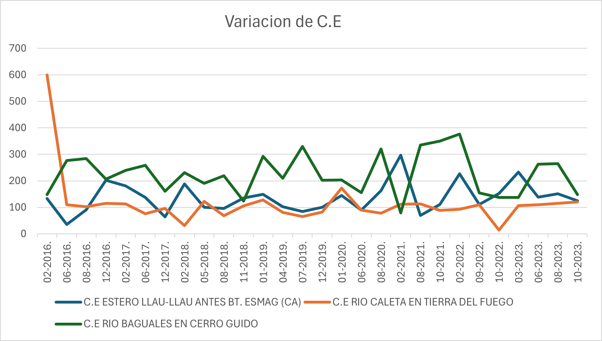
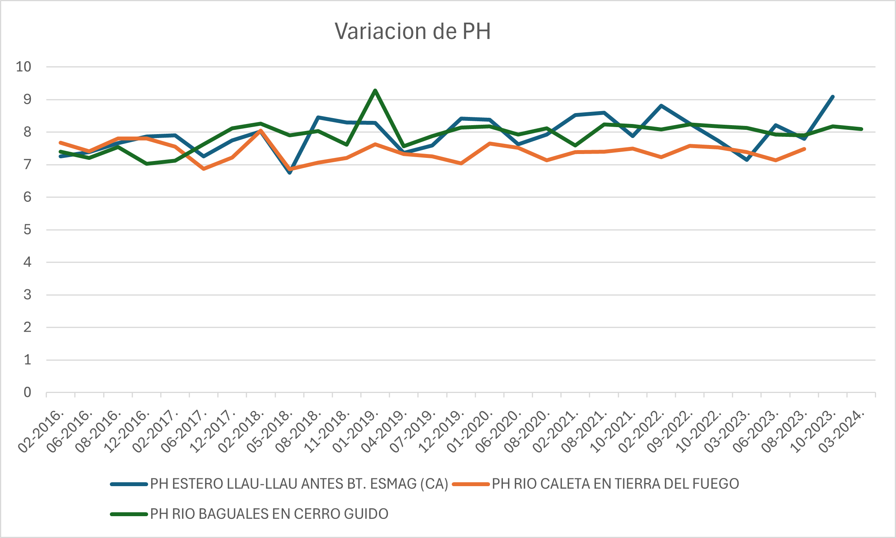
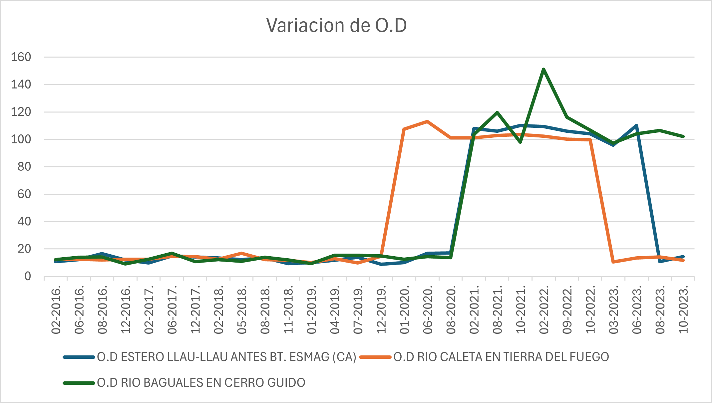
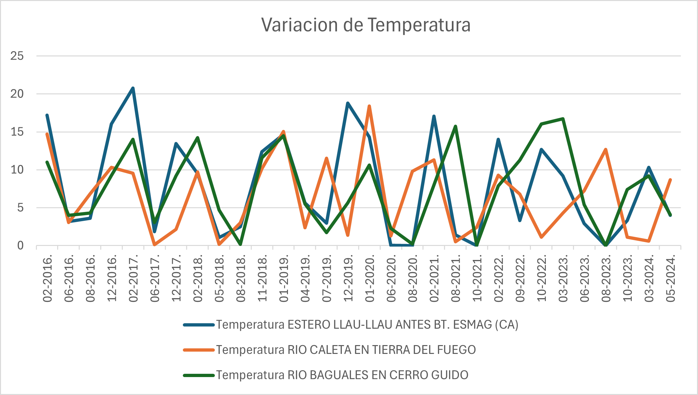

En esta página se presentan los principales parámetros analizados en la calidad del agua: pH, conductividad eléctrica, oxígeno disuelto y temperatura.
Indica la capacidad del agua para conducir electricidad, relacionada con la cantidad de sales disueltas.
Mide el grado de acidez o alcalinidad del agua. Valores cercanos a 7 indican condiciones neutras.
Representa la cantidad de oxígeno disponible en el agua, fundamental para la vida acuática.
La temperatura influye en la solubilidad del oxígeno y en los procesos biológicos dentro del cuerpo de agua.
